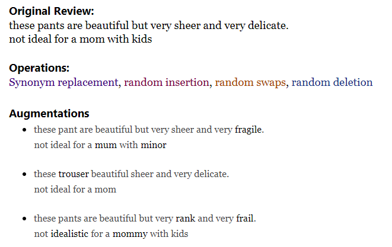
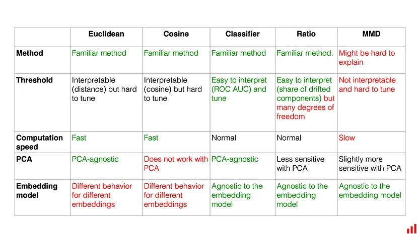
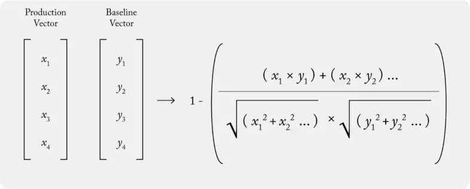
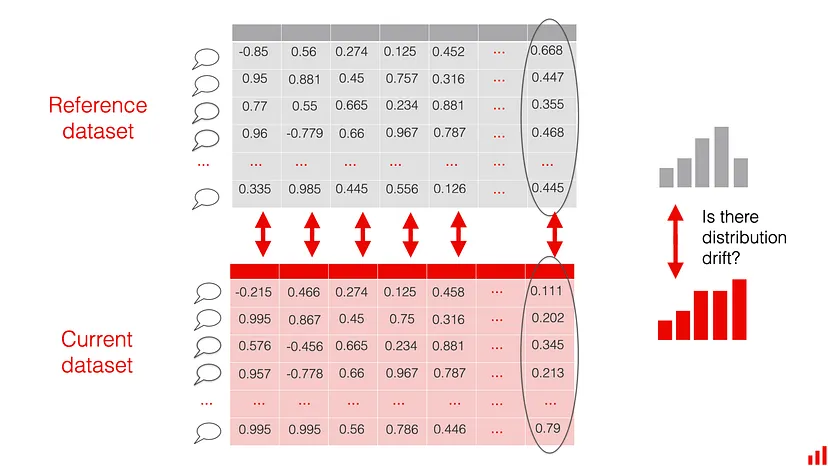

Embeddings
Misc
- Also see
- Embeddings can be aggregated (e.g. averaged) to make larger groupings
- Example: Averaging the embeddings of food items to create an embedding for a meal
- Jina AI model, jina-embeddings-v2, has 8K (8192 tokens) context length, which puts it on par with OpenAI’s proprietary model, text-embedding-ada-002, in terms of both capabilities and performance
- Willison llm plugin for this model
Concepts
Embeddings are numerical representations of words or sentences
Misc
- Notes from a video
- Capture analogies well
- Horizontally: Puppy is to Dog as Calf is to Cow
- X-Axis could represent a latent variable like Age
- Vertically: Pupy is to Calf as Dog is to Cow
- Y-Axis could represent a latent variable like Size
- Horizontally: Puppy is to Dog as Calf is to Cow
- Each latent variable is a dimension in the embedding
- Word and Sentence embedding matrices can have lengths in the 1000s
- Capture analogies well
- Notes from a video
Issue with one-hot encoding is that it does not place similar entities closer to one another in vector space.
The embeddings form the parameters — weights — of the network which are adjusted to minimize loss on the task.
Which categories get placed closer to each other in the embedding depends on the outcome variable during the training
- Figuring out how to create the supervised task to produce relevant representations is the toughest part of making embeddings.
- Example: Categorical to be embedded is book titles
- “Whether or not a book was written by Leo Tolstoy” as the outcome variable will result in embeddings would place books written by Tolstoy closer to each other.
The categorical variable with 100s of levels can be reduced to something like 50 vectors (node weights in the embedding layer of the network)
.png)
- Sale Price is the outcome (observed values represented by “Sale Price” in orange box)
- Sparse Vector Encoding (I think this is one-hot) for the categorical levels you want embedded
- Other features are included in the embedding model but they only connect to other hidden layers (pink) We can use the same group of predictors and outcome variable in the embedding DL model that we want to use in the tree (or whatever) algorithm
Embeddings
- Hyperparameter: Dimension of the embedding layer
- Higher dimension embeddings are a more accurate representation of the relationship
- Downside is a greater risk of overfitting and longer training times
- Should be tuned
- Starting point: dimensions ≈ (possible values)0.25
- “possible values” would be the vocabulary for a text variable embedding
- Starting point: dimensions ≈ (possible values)0.25
- Higher dimension embeddings are a more accurate representation of the relationship
- {text}
- provides access to hugginface transformers
- {embed}
Example
embed::step_embed(cat_var, num_terms = 4, hidden_units = 16, outcome = vars(binary_outcome_var), options = embed_control(loss = "binary_crossentropy", epochs = 10))- num_terms is the dimension of the embedding layer (i.e. number of output variables)
- hidden_units is the layer between the embedding layer and output layer
- Should probably try to
tune()num_terms at least.
Example: Likelihood (aka Effect) Encoding
museum_rec <- recipe(Accreditation ~ ., data = museum_train) %>% update_role(museum_id, new_role = "id") %>% step_lencode_glm(Subject_Matter, outcome = vars(Accreditation)) %>% step_dummy(all_nominal_predictors())“Subject_Matter” is the high cardinality cat var
step_lencode_glm fits a glm for each(?) level of the cat var uses its estimated effect as the encoded value
mixed linear model (
step_lencode_mixed) and bayesian model (step_lencode_bayes) are also available instead of a glmThese type of embeddings use the average estimated effect as a value for any new levels that show-up in future data
tidy(grants_glm, number = 1) %>% dplyr::filter(level == "..new") %>% select(-id)
View embedding values
prep(museum_rec) %>% tidy(number = 1)- Not sure if “number = 1” is the step in the recipe or what
Engineering
- {embed}
step_collapse_stringdist- Collapse factor levels that have a low stringdist between themexample_data <- tibble( x = c("hello", "helloo", "helloo", "helloooo", "boy", "boi", "dude!") ) recipe(~., data = example_data) |> step_collapse_stringdist(all_predictors(), distance = 1) |> prep() |> bake(new_data = NULL) #> # A tibble: 7 × 1 #> x #> <fct> #> 1 hello #> 2 hello #> 3 hello #> 4 helloooo #> 5 boi #> 6 boi #> 7 dude!distance needs to be an integer
With distance = 1, the”helloo” factor level becomes “hello” and the “boy” factor level becomes “boi”
- Not sure how the “osa” metric works but maybe “hello” is chosen because it has less characters than “helloo” and “boi” is chosen because “i” comes before the “y” in “boy.”
Distance Metrics (method = “osa” is default)
osaOptimal string aligment, (restricted Damerau-Levenshtein distance). lvLevenshtein distance (as in R’s native adist).dlFull Damerau-Levenshtein distance. hammingHamming distance ( aandbmust have same nr of characters).lcsLongest common substring distance. qgramq-gram distance. cosinecosine distance between q-gram profiles jaccardJaccard distance between q-gram profiles jwJaro, or Jaro-Winkler distance. soundexDistance based on soundex encoding (see below) - Docs gives further details on each distance measure
Augmentation
- Useful for imbalanced outcomes with text predictors
- Better performance than subsampling
- Words are randomly swapped, deleted, as well as replaced or inserted with synonyms using pretrained word embeddings
 - Adversarial Text Attack
{kind=link}
{kind=link}
Monitoring
- Tracking embeddings drift
- Misc
- Notes from
- Measuring Embedding Drift
- Recommended Euclidean
- How to Measure Drift in ML Embeddings
- Recommended Model-based first and Share of Drifted Components second
- Also has overview and link to paper for Maximum Mean Discrepancy (MMD) which is a more complex method I didn’t want to get into at the time.
- Code available; Used {{evidently}}
- Measuring Embedding Drift
- Notes from
- Reasons for drift
- Changing your model’s architecture can change the dimensionality of the embedding vectors. If the layers become larger/smaller, your vectors will too.
- Use another extraction method: In the event of the model not changing, you can still try several embedding extraction methods and compare between them.
- Retraining your model: Once you retrain the model from which you extract the embeddings, the parameters that define it will change. Hence, the values of the components of the vectors will change as well.
- Vision
- Unique situations, events, people or objects that are observed in production data but are missing from the training set
- Text
- When a word, category or language that does not exist in the training data emerges in production
- Any changes in terminology in the data or changes to the context or meaning of words or phrases over time can contribute to drift.
- Low-resource languages and cultural gaps in speech can also compound these difficulties
- Example: a sentiment classification model trained on apparel product reviews in English but in production, encounters reviews in Spanish for the first time
- Or is asked to predict the sentiment of reviews of specialized medical devices.
- Changing your model’s architecture can change the dimensionality of the embedding vectors. If the layers become larger/smaller, your vectors will too.
- Extraction Methods
- Extract embeddings from the current model in production.
- Extracting the last fully connected layer before the classification to create an image embedding is advisable.
- The latent structure in this layer will contain information about structure in the image such as objects and actions, in addition to general quality information relative to images in the training set
- In the case of a vision transformer (ViT), it is recommended that you extract the embedding that the multilayer perceptron (MLP) is acting on to make an image-level decision
- Example on how to extract embeddings from a well-known Hugging Face model (article)
- Extracting the last fully connected layer before the classification to create an image embedding is advisable.
- Using a model to extract the embedding
- e.g. a foundational model like BERT
- Advantages
- No modification is needed on the production model
- Easy option for testing and running on internal data.
- Disadvantage: the model is only looking at the data itself and is not looking at the internal model decisions.
- Extract embeddings from the current model in production.
- Choose a reference vector or dataset
- Formulate an expectation on how stable or volatile your data is and choose the reference data that adequately captures what you expect to be a “typical” distribution of the input data and model responses.
- Examples
- Validation data
- Past period that you consider representative
- e.g. this week’s data to the previous week and move the reference as you go.
- Metrics
- Whichever metric you choose, it will need to be tuned. To tune it, you can model your drift detection framework using historical data or, alternatively, start with some sensible default and then adjust it on the go.
- Euclidean distance
- Smaller the distance, the more similar the embeddings
- Range: 0 to ∞
- More stable, sensitive and scalable compared to hyperbox IOU, euclidean distance, cosine distance, and clustering-based group purity scores.
- An absolute measure which makes setting a specific drift alert threshold harder: the definition of “far” will vary based on the use case and the embedding model used. You need to tune the threshold individually for different models you monitor.
- Calculate centroid for embedding vectors in the production model (and baseline model)
- Note: vertical dots are missing in the vectors
- The centroid is calculated by taking the row-wise averages
- Compare production centroid to baseline centroid
- Smaller the distance, the more similar the embeddings
- Cosine Distance (1 - cosine similarity)
- Smaller the distance, the more similar the embeddings
- If the two distributions are the same, the Cosine similarity will be 1, and the Cosine distance will be 0. The distance can take values from 0 to 2.
- The threshold might be not very intuitive to tune, since it can take values as low as 0.001 for a change that you already want to detect.
- Another downside is that it does not work if you apply dimensionality reduction methods like PCA, leading to unpredictable results.
- Model-based drift detection
- Train a classification model that tries to identify to which distribution each embedding belongs and use the AUROC as the drift score.
- If the model can confidently predict from which distribution the specific embedding comes, it is likely that the two datasets are sufficiently different.
- i.e. An AUROC score above 0.5 shows at least some predictive power, and an AUROC score of 1 corresponds to “absolute drift” when the model can always identify to which distribution the data belongs.
- Works consistently for different datasets and embedding models we tested, both with and without PCA. It also has an intuitive threshold
- Share of drifted components
- The individual components of each embedding are treated as “columns” in a structured dataset.
- Compute the drift in each component.
- e.g. Wasserstein (Earth-Mover) distance with the 0.1 threshold. The intuition behind this metric is that when you set the threshold to 0.1, you will notice changes in the size of the “0.1 standard deviations” of a given value.
- Measure the overall share of drifting components.
- e.g. if your vector length is 400, you can set the threshold to 20%. If over 80 components drift, you will get a drift detection alert.
- Allows you to reuse familiar techniques that you might be using to detect drift on tabular data.
- More tuning parameters than other methods: underlying drift detection method, its threshold, and the share of drifting components to react to.
- Use the 2-sample Kolmogorov–Smirnov test (KS)
- “Multiple samples from the embedding set can be taken calculating the euclidean distance metric for each sample set separately, and the KS test can be used to determine if drift has or hasn’t occurred.”
- See Distributions >> Tests for more details
{kind=link}
{kind=link}
{kind=link}